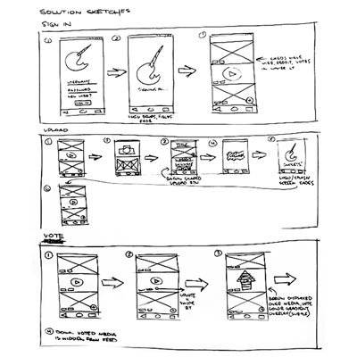
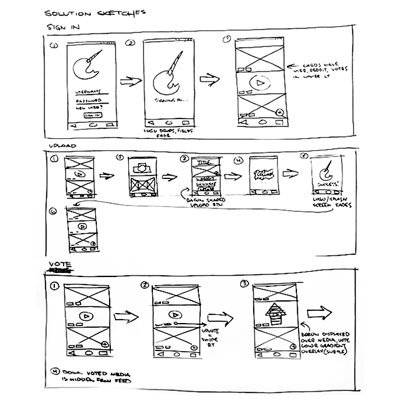

In my experience, few apps have done little more than display content as an endless text-based list, restricting users to a single subreddit. This approach, while great for skimming over a high volume of similar content, isn’t particularly engaging.
Baconreader became the focus of my redesign project for this very reason. Also, admittedly, due in some part to my own familiarity with and affinity for the app.
As a rookie UX designer, I developed design principles and followed a workflow in accordance with Jake Knapp’s, Sprint, How to Solve Big Problems and Test New Ideas in Just Five Days. Just for fun I opted to rename and rebrand the app Whal/r/, in honor of Reddit’s collective love for the noble and majestic narwhal.
My goal for the first day was to target a problem that I could solve by the end of the week. So, based on my own expectations of Reddit users, I tried to build a (very) rough process map.

By the end of day one I had set my sights on building a simple solution for post submission and commenting. I also established a set of guiding principles to inform the designs I would create later. I decided the app needed to prioritize key options and functions while adhering to a consistent, minimalist design.
Tuesday started with a thorough review of Baconreader and ended with some unique solutions for Whal/r/. To start, I sketched screens that captured aspects of my competitor's functionality.

It wasn’t long into my review that I found some room for improvement. Specifically, I discovered that Baconreader hampered browsing with its limited navigational tools and relegated the sharing function to drop-down menus. It became clear to me I could capitalize on those shortcomings and that I would need to consider them as I drew plans for my prototype.
My sketches helped me to develop ideas my target flows as well as plot the overall behavior of the app itself.
 

The rather intense, one-minute ideation sessions were somewhat helpful (if a bit nerve-racking). And though they were few, I managed to jot down ideas for user interaction, layout, etc.

Wednesday, I took the best sketches and rendered a storyboard. During this process I tried to conceive of a scenario wherein a user would discover Whal/r/, install it, and submit their own content to Reddit through the app.

A welcome result of this exercise was gaining some user perspective; an appreciation for what users might expect and how they would interact with my app.
My main objective at this point was to firm up the concepts explored in my sketches and think about how I might best utilize them in my designs.
The first set of wireframes I created were focused on the navigation and sharing issues I previously identified during the competitive analysis phase. One key characteristic of the early versions included the addition of subreddit names to the navbar and making them clickable (tap-able) navigation components.

It was my hope that by doing so would I could make traversing subreddits a simpler task and, much like location-based breadcrumbs, increase the speed of browsing. I also moved the share button out of its menu and onto the navbar for easier access.
Alongside my early wireframes I developed a diagram for my two main user flows. Akin to the storyboard exercise, this process helped me fill the gaps between design objectives and early wireframes.

It was my intention while creating the second set of wireframes to focus mainly on adding necessary post information, e.g., timestamp, votes, etc., that I’d left out. However, once I reviewed the user flow diagram I decided that I also need to eliminate a redundant screen in the prototype. In its place I added multi-function button for media and URL links.

Five users were asked to complete several tasks using the second iteration of wireframes as a prototype. During testing, users were encouraged to elaborate on their interactions with the prototype as they attempted to complete each task.
The graph below displays each task along with respective completion times for each of the participants. Based on the testing parameters, the typical 8 second completion time seemed an acceptable mean.
Tests also revealed that submission and sort tasks took users between 18 and 24 seconds to complete. I found this especially interesting considering the only two recorded failures to complete were for those very same tasks.
When it came to post submission delays, I presumed the decision-making requirements and multi-part nature of the process made them justifiable. The sort function, however, seemed deeply flawed as users spent in excess of 20 seconds simply trying to locate the button.
Now that I had some quantifiable data to inform my design decisions I set to creating mock-ups.
In keeping with my wireframes, I wanted to build my design around cards as it seemed the simplest means to make content readily scannable. My decision to do so was bolstered by the fact that 79 percent of users scan pages rather than read word-by-word.
Further designs expanded upon the navbar and added distinct visual indicators for user interaction and location within the app.


Of course, crucial functionality, like the share button, was also given a place directly on the post screen and pulled from the doldrums of a secondary menu.
The next logical step for the Whal/r/ project is to conduct further rounds of testing with the finished mock-ups. Such tests would include thorough usability evaluations and A/B testing of visual components.